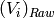
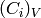
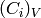
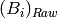

DNSDetEffCorrVana dialog.
Table of Contents
| Name | Direction | Type | Default | Description |
|---|---|---|---|---|
| InputWorkspace | Input | MatrixWorkspace | Mandatory | A workspace with experimental data from sample. |
| OutputWorkspace | Output | MatrixWorkspace | Mandatory | A workspace to save the corrected data. |
| VanaWorkspace | Input | MatrixWorkspace | Mandatory | A workspace with Vanadium data. |
| BkgWorkspace | Input | MatrixWorkspace | Mandatory | A workspace with background for Vanadium data. |
| VanadiumMean | Input | string | A 2x1 matrix workspace with mean Vanadium counts (optional). |
Warning
This algorithm is being developed for a specific instrument. It might get changed or even removed without a notification, should instrument scientists decide to do so.
This algorithm applies detector efficiency correction to a given data Workspace2D. As a result, two workspaces will be created:
Detector efficiency correction is performed using the measurements of vanadium standard sample (hereafter Vanadium). Background for Vanadium must be also measured and provided to the algorithm as an input BkgWorkspace. Vanadium and its background can be measured at several detector bank positions. This algorithm does the detector efficiency for a particular run in following steps:
Normalize Vanadium workspace to a chosen normalization:

where  is the signal from the  th detector in the Vanadium workspace and  is the number in the corresponding bin of the normalization workspace. The Divide v1 algorithm is used for this step.
th detector in the Vanadium workspace and  is the number in the corresponding bin of the normalization workspace. The Divide v1 algorithm is used for this step.
Normalize Background workspace to a chosen normalization:

where  is the signal from the th detector in the Background workspace and  is the number in the corresponding bin of the normalization workspace. The Divide v1 algorithm is used for this step.
is the number in the corresponding bin of the normalization workspace. The Divide v1 algorithm is used for this step.
Warning
Normalization workspaces are created by the LoadDNSLegacy v1 algorithm. It is responsibility of the user to take care about the same type of normalization (monitor counts or run duration) for Vanadium and Background.
Subtract Background from Vanadium:

The Minus v1 algorithm is used for this step. In the case of negative result, the error message will be produced and the algorithm terminates.
Calculate the correction coefficients:

where  is a mean value of Vanadium counts. The Divide v1 algorithm is used for this step.
is a mean value of Vanadium counts. The Divide v1 algorithm is used for this step.
Note
If no VanadiumMean workspace is given as an input, the will be calculated as  . However, in the case if correction is applied to a group of runs, must be calculated as for the whole group, saved to VanadiumMean workspace and provided to this algorithm as an input.
. However, in the case if correction is applied to a group of runs, must be calculated as for the whole group, saved to VanadiumMean workspace and provided to this algorithm as an input.
Apply correction to the data:

where  are the neutron counts in the InputWorkspace.
are the neutron counts in the InputWorkspace.
The input workspaces (InputWorkspace, VanaWorkspace, BkgWorkspace) have to have the following in order to be valid inputs for this algorithm.
For the physically meaningful correction it is also important that these workspaces have the same slits size, polarisation, detector bank rotation angle, flipper status and the neutron wavelength. If some of these parameters are different, algorithm produces warning. If these properties are not specified in the workspace sample logs, no comparison is performed.
The workspace VanadiumMean is an optional parameter. However, if it is specified, it must be a Workspace2D with 2 dimensions, 1 histogram and 1 bin.
Example - Apply correction to a single run:
# data, vanadium and background files.
datafile = 'oi196012pbi.d_dat'
vanafile = 'dn134011vana.d_dat'
bkgrfile = 'dn134031leer.d_dat'
# Load datasets, loader will create an additional normalization workspace
data_ws = LoadDNSLegacy(datafile, Polarisation='x', Normalization='monitor')
vana_ws = LoadDNSLegacy(vanafile, Polarisation='x', Normalization='monitor')
bkgr_ws = LoadDNSLegacy(bkgrfile, Polarisation='x', Normalization='monitor')
corrected = DNSDetEffCorrVana(data_ws, vana_ws, bkgr_ws)
for i in range(3):
print round(corrected.readY(i), 2)
Output:
99180.91
77190.96
77265.61
Categories: Algorithms | PythonAlgorithms | MLZ | DNS | CorrectionFunctions | EfficiencyCorrections
Python: DNSDetEffCorrVana.py
{kind=link}